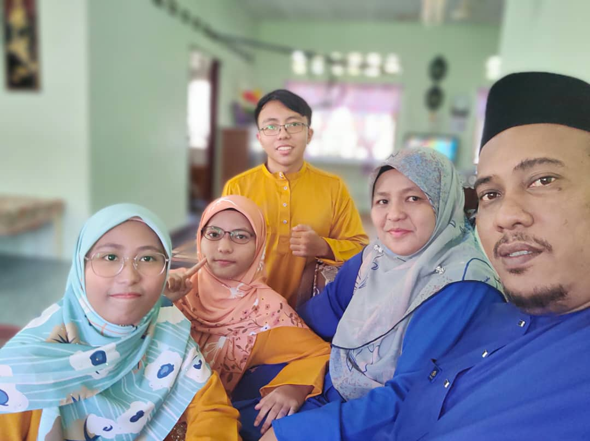
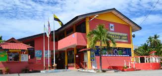
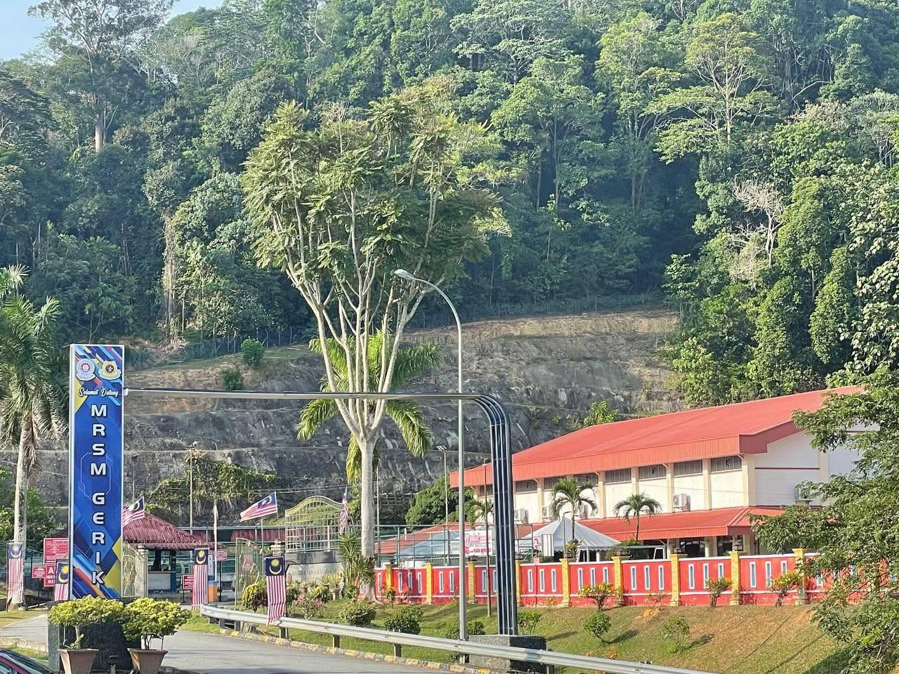
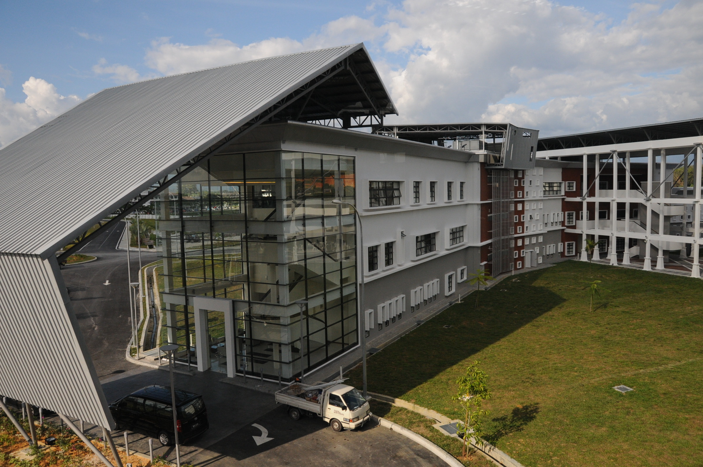

Name: Faris Irfan Bin Bawani Huzaimi
Age: 23 years old
Course: Bachelor of Information Science (Hons) Library Management
University: Universiti Teknologi MARA (UiTM) Merbok
Hobbies:
Favorite Food: Roti Canai and any kind of food with chicken.
Favorite Color: Blue and Black.
Siblings: I have two younger sisters.


